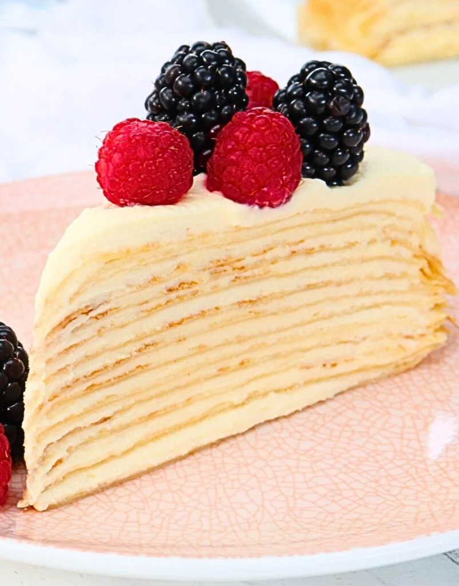

Crepe Cake

INGREDIENTS
5 large eggs
2 ½ cups all-purpose flour
2 tablespoons white sugar
½ teaspoon kosher salt
2 ½ tablespoons vegetable oil
3 ¼ cups whole milk
½ teaspoon vanilla extract
4 tablespoons butter, or as needed
1 (10 ounce) jar strawberry jam
2 tablespoons water
¾ cup mascarpone cheese
1 ½ cups heavy cream
3 tablespoons white sugar
½ teaspoon vanilla extract
STEPS
Pour eggs, flour, sugar, salt, oil, milk, and vanilla extract into a blender. Blend, starting on low speed and finishing on high, until combined. Refrigerate batter for at least 30 minutes.
Scoop strawberry jam into a saucepan. Rinse out jar with water and pour into the saucepan. Bring to a simmer over medium heat and stir. Simmer for 1 minute, remove from heat, and stir. Let cool to room temperature.
Brush some butter over a nonstick skillet over medium heat. Pour in 1/4 cup batter; tilt pan to coat evenly. Cook until crepes bubble and brown, about 1 1/2 minutes per side. Transfer to a baking sheet. Repeat with remaining batter, buttering the pan between crepes. Let cool completely before stacking, at least 15 minutes.
Combine mascarpone cheese, cream, sugar, and vanilla extract in a bowl. Whisk together until stiff peaks form.
Lay a crepe onto a large plate. Spoon on 2 or 3 tablespoons of the cream mixture, spreading it almost to the edge. Swirl in some strawberry jam. Transfer finished crepe onto a flat serving plate. Repeat with remaining crepes, cream, and jam. Center each crepe over the previous one in a stack. Gently press on a final plain crepe to finish.